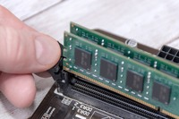
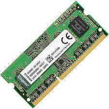
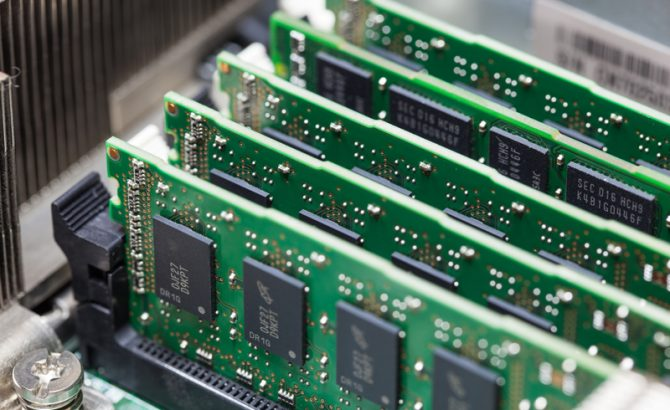

Las memorias RAM y las memorias de almacenamiento son componentes clave en una computadora, pero cumplen funciones diferentes. La memoria RAM (Memoria de Acceso Aleatorio) es como el espacio de trabajo temporal de la computadora. Cuando abres un programa o ejecutas una tarea, la RAM almacena temporalmente los datos necesarios para que el procesador pueda acceder a ellos rápidamente. Cuanta más RAM tenga tu computadora, más programas y tareas podrá manejar al mismo tiempo sin volverse lenta. Sin embargo, la RAM no guarda información permanentemente; una vez que apagas la computadora, los datos almacenados en la RAM desaparecen.
Por otro lado, las memorias de almacenamiento, como los discos duros (HDD) o unidades de estado sólido (SSD), son responsables de guardar la información de manera permanente. Aquí es donde se almacenan el sistema operativo, los programas, archivos y todos los datos que necesitas conservar incluso después de apagar la computadora. Los HDD usan discos magnéticos para leer y escribir datos, mientras que los SSD no tienen partes móviles y son mucho más rápidos, ya que utilizan chips de memoria flash para acceder a la información casi de inmediato.
Es de tener en cuenta la frecuencia de la memoria RAM, se mide en megahercios (MHz) y representa cuántas operaciones puede realizar por segundo. Una RAM con una frecuencia más alta, como 3200 MHz, puede procesar datos más rápidamente que una de 2400 MHz, lo que mejora el rendimiento general de la computadora. Sin embargo, para aprovechar al máximo esta velocidad, es importante que la placa base y el procesador también sean compatibles con frecuencias más altas.
Las versiones de "DDR" de las memorias RAM indican su generación, siendo las más comunes DDR3, DDR4, DDR5 y DDR6 en computadoras modernas. Cada nueva generación mejora la velocidad y la eficiencia energética en comparación con la anterior. Por ejemplo, la DDR4 ofrece velocidades entre 2133 MHz y 4266 MHz, mientras que la DDR5 comienza desde 4800 MHz y puede superar los 8400 MHz, lo que la hace más rápida. Es fundamental que tu placa base sea compatible con la versión de DDR que elijas, ya que las memorias de diferentes generaciones no son intercambiables, esto significa que por ejemplo una DDR4 no funcionará en una placa diseñada solo para DDR3.
Cuando se utilizan módulos de RAM de diferentes frecuencias en una computadora, la memoria más rápida se ajustará automáticamente a la velocidad de la memoria más lenta. Por ejemplo si tienes una RAM de alta frecuencia, como 3200 MHz, junto a otra de menor frecuencia, como 2400 MHz, ambas funcionarán a la velocidad de 2400 MHz. Esto se conoce como "compatibilidad hacia abajo" y puede limitar el rendimiento general de tu sistema ya que no estás aprovechando al máximo la capacidad de la RAM más rápida. Para obtener el mejor rendimiento, es recomendable usar módulos de RAM con la misma frecuencia y preferiblemente de la misma marca y modelo.
Volver